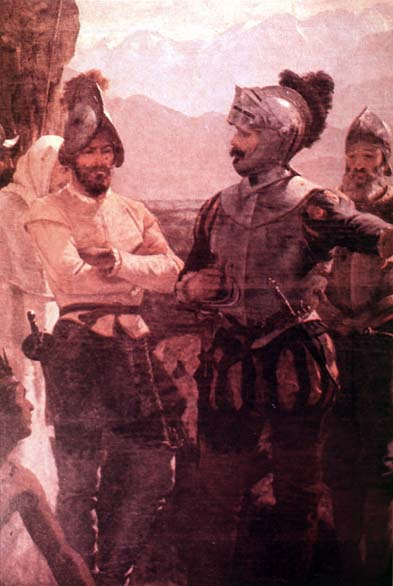

|
|  |
|
Pedro Lira, La fundación de Santiago
|
Pedro Lira´s The Foundation of Santiago (1888) similarly emblematizes the origin of the nation-state in the 'foundation' of its capital city by Pedro de Valdivia in 1541 from atop the Cerro de Santa Lucía. It is interesting that the spot is indicated to its new masters by the crouching indigenous figure in the foreground –a native guide– in a gesture of symbolic handover of the land. No active violence is exerted, but the position and overwhelming force of Valdivia and his soldiers makes clear that their claim to authority is based on military strength rather than the evangelising mission highlighted by Meirelles´s painting (the only cleric on the image is half-hidden behind Valdivia, as if blocked out of the action, faceless). Like The First Holy Mass, Lira´s painting was displayed overseas, winning second prize at the Universal Exhibition of Paris in 1889, and then purchased by the Chilean government.
|